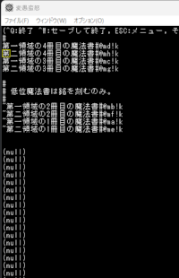
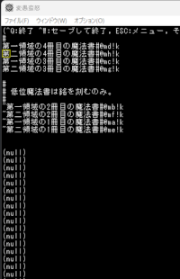

クイックアクセス
-
現在開発中の3.0.1.16(Beta)リリースは2024/06/30の予定です。
-
何かすぐに確認したい質問、要望などがありましたらDiscussionの開発への質問はこちらまでへどうぞ。
-
正式なバグ報告などはGitHubのIssueとしてこのテンプレートを用いてよろしくお願いします
-
またコミュニティとしてはDiscordの#ぐりっどばぐが現在一番活発です。
最新の告知
(2024/06/15＆06/22追記) 変愚蛮怒3.0.1.15(Beta)リリース
リファクタリングとバグ修正を行いました。6/22rpmパッケージリンクを追加しました。
リリースノートはこちらです。
変愚蛮怒とは
変愚蛮怒はMoria/Angbandから始まる*band系ローグライクゲームのバリアント(変種)の一種です。直接にはZangbandから派生しています。 鉄獄100Fに潜むラストボス『混沌のサーペント』を撃破して『＊勝利＊』を遂げるためには、キャラクターのレベルや装備だけでなく、＊あなた＊自身の習熟が求められます。
過去の告知
(2024/06/04) 変愚蛮怒3.0.1.14(Beta)リリース
モンスターから経験値を正しく得られないことがある不具合が起きたためHotfixを行いました。申し訳ありません。
6/8:RPM追加しました。
リリースノートはこちらです。
(2024/06/02) 変愚蛮怒3.0.1.13(Beta)リリース
多数のデバッグとリファクタリングを行いました。エンバグの可能性は少なからずありますのでよろしければ各種報告よろしくお願いします。
リリースノートはこちらです。
(2023/11/26) 変愚蛮怒3.0.1.2(Beta)リリース
バグ修正を行いました。
リリースノートはこちらです。
(2023/10/29) 変愚蛮怒3.0.1.0(Beta)リリース
この辺りでリファクタリングと新規追加要素がある程度固まったと判断しました。3.0系初Betaリリースです。
リリースノートはこちらです。
(2023/10/20) 変愚蛮怒3.0.0.91(Alpha)のrpmパッケージ
whitehara氏のrpmパッケージが更新されましたhttps://copr.fedorainfracloud.org/coprs/whitehara/hengband/
当バージョンの最新パッケージはこちらです。
(2023/10/18) 変愚蛮怒3.0.0.91(Alpha)リリース
緊急リリースです。モンスターの姿に関する致命的なバグと、以前から魔法威力が差し変わっていた不具合を直しました。
リリースノートはこちらです。
(2023/08/21) 延期の知らせ
すみません(告知表示もズレていましたが)8/20定期リリースは延期いたします。予定多めに延期にして9/6(水)とさせていただきます。
(2023/08/07) 変愚蛮怒3.0.0.89(Alpha)リリース
遅れてすみません、定期リリースです。若干の修正行いつつやはりAlphaリリースになりました。
今回から実験的実装(developブランチ)と正式向けリリース(stableブランチ)とを分けました。新しい敵の魔法を追加したdevelop側のリリースも近日予定しています。
今回から実験的実装(developブランチ)と正式向けリリース(stableブランチ)とを分けました。新しい敵の魔法を追加したdevelop側のリリースも近日予定しています。
リリースノートはこちらです。
(2023/07/12) 変愚蛮怒3.0.0.87(Alpha)のrpmパッケージ
以前からwhitehara氏にrpmパッケージをhttps://copr.fedorainfracloud.org/にアップしていただいております。
今後、こちらに告知とリンク貼り付けを行います。whitehara氏にこの場を借りてお礼申し上げます。今後ともよろしくお願いいたします。
当バージョンのパッケージはこちらです。
(2023/07/09) 変愚蛮怒3.0.0.87(Alpha)リリース
定期リリースです。再度まだデバッグや試験要素が多くあるのでαリリースとなりました。ご了承ください。
リリースノートはこちらです。
(2023/06/11) 変愚蛮怒3.0.0.85(Alpha)リリース
定期リリースです。デバッグとリファクタリング、いくつかの機能追加しました。次回Beta移行するかもしれません。
リリースノートはこちらです。
(2023/05/28) 変愚蛮怒3.0.0Alpha84リリース
定期リリースです。デバッグとリファクタリングの他に、羊皮紙という過去に使われていたフレーバー要素が追加されました。
リリースノートはこちらです。
(2023/05/02) 変愚蛮怒3.0.0Alpha80リリース
再開早々にやらかしました。緊急修正リリースです。

Alpha79で造った時点の自動拾いファイルをエディタで開くと、行数余り一杯(null)で埋め尽くされる不具合が発生していました。前バージョンでエディタを開いて保存してしまった場合はお手数ですが当該ファイルを別エディタなどで修正をよろしくお願いします。大変面倒をおかけして申し訳ありません。

Alpha79で造った時点の自動拾いファイルをエディタで開くと、行数余り一杯(null)で埋め尽くされる不具合が発生していました。前バージョンでエディタを開いて保存してしまった場合はお手数ですが当該ファイルを別エディタなどで修正をよろしくお願いします。大変面倒をおかけして申し訳ありません。
リリースノートはこちらです。
(2023/04/02) サーバシステム復旧と変愚更新未定のお知らせ。
Twitterでスタッフが個人的に告知していましたWikiやスコアサーバの不調復帰しました。
変愚蛮怒本体の不具合修正などは、まだ各位着手の目途が立たないため、しばらく不定期更新とさせていただきます。
(2023/03/19) 3.0.0Alpha79リリース再延期
前回に引き続きスタッフ各位繁忙期につき延期します。バグの報告いくつか受け取っておりますのでそれらに対応予定です。
(2022/12/19) 3.0.0Alpha73リリース再延期
すみません、まだ大がかりな改変が続いております。さらに来週に延期します。
(2022/12/11) 3.0.0Alpha73リリース延期
現在大掛かりなリファクタリング、機能追加が行われているため、定期リリースを来週に延期します。
(2022/12/06) 「変愚蛮怒のDoxygen生成ドキュメント(3.0.0Alpha72)」を追加
開発記事を追加しました。こちらへどうぞ。
(2022/12/03) 「変愚蛮怒のコントリビュータになろう」を追加
乱文気味なので後日なおしますが、開発記事を追加しました。こちらへどうぞ。
(2022/11/14) 開発ページ更新
大分内容が旧くなっていること、リポジトリ管理が複雑になっていることからいくらか更新しました。
(2022/11/13) 変愚蛮怒3.0.0Alpha71リリース
定期リリースです。デバッグのほか、Windows版にBGM/効果音音量調整機能を付加しました。
今回よりリファクタリングでarumons氏に貢献していただきました。ありがとうございます。
リリースノートはこちらです。
(2022/10/30) 変愚蛮怒3.0.0Alpha70リリース
定期リリースです。今回リファクタリングの他、新たにEvidentlyCube氏にreadmeの英訳整理していただきました。 普段から、backwardsEric氏にも英語チェック並びにLinux版のご指摘をいただき、海外からのご協力感謝の極みです。
リリースノートはこちらです。
(2022/08/21) 変愚蛮怒3.0.0alpha65リリース延期
慣例になってしまい申し訳ないですが、リリース次週延期します。
(2022/07/24) 変愚蛮怒3.0.0alpha64リリース延期
今回多忙につき来週7/31に延期します。ご了承下さい。
(2022/07/03) 変愚蛮怒3.0.0alpha63リリース延期
今回多忙とバグ修正不十分につき、来週7/10に延期します。ご了承下さい。